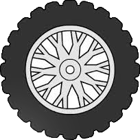

Topic 08: Creating CSS3 Transitions and Animations in CSS and triggering them with JavaScript.
Transition
Examples of transition - see codes below
Transformation
Example of Transformation (Rotate)

Animation using Canvas
Animations using @keyframes
There are so many ways that one can create animations in both CSS and
Javascript. With the following animations I have used
@keyframes and animate in
CSS to achieve the animation and triggered from Javascript.
Example 1
Example 2
I was able to grab a sprite sheet with 8 graphics on the sheet. the original sheet was 600px x 128px. I was able to enlarge it in Photoshop to 960px x 211px. Each graphic was then 120px x 211px. This size of each sprite was required to ensure that the stylesheet was coded correctly. See the style sheet code below.